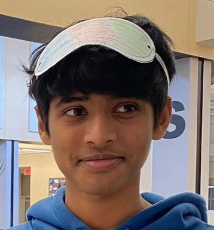

Charvik Kothakonda

Summary
I am a sophomore at Oakdale High who is Passionate and Dedicated to the work I do and the effort I put in. I am an intermediate Java programmer and an intermediate web developer.
Education
The Hyderabad Public School, Begumpet, India / Middle School
Oakdale High School / Freshman Year
Extracurriculars (Past and Present)
- I played cricket for my school team in 8th Grade
- Ran Cross Country, Indoor Track, and Outdoor Track during Freshman Year
- I participated in the National Cadet Corps during 8th Grade and was made the Seargent (highest student rank).
- Playing cricket for SSCA, U-15 Division 1 and U-17 Division 2
- Got Selected for the HUB tournaments in U-15 Division 1 Cricket to compete for Regionals
Education
Currently taking all Honor class requirements for Freshman Year
Taking 2 APs sophomore year with remaining classes as Honors
Plan on applying for Early Collage at Fredrick Community Collage after Softmore Year
Work Experience
- 100+ hours of community service in a Vedic School in India
Skills
- Handle pressure and stress
- Athlete
- multi-task multiple things
- Can adapt to various situations
- Focused, Dedicated, and Determined
- Organized
- Learn new stuff quickly
Awards and Certificates
- Cleared 4 levels of Spell Bee and cleared the International level in the Merit Plus level.
- Got 2nd Overall in Track and Field in India during 8th Grade
- Black Belt in Karate
- Won 1st place in the CISCE Regional Tournament in Cricket and got a Gold Medal in India with my Team
- Cleared Level 1 of the GeoMap Quiz and Participated in the final round in India.
- Got Scholar Athlete during Cross Country, Indoor Track and Field, and Outdoor Track and Field for Maintaining a GPA over 3.25.
- Took part and was selected for several in-school competitions(India) such as Minecraft Build-Off, Powerpoint Presentation, Graphic Design, Logo Design, Volleyball, Basketball, Soccer, Hockey, Track and Field, Cricket, Obstacle Course.
Others